2. Chance Operations and Controlled Randomness#
In the last chapter chance drew lines for us; today we learn to shape chance, using distributions, weights, and seeds, and to generate color-chart compositions in the spirit of Gerhard Richter and Ellsworth Kelly.
Today’s destination#
A large Richter-style color grid: thousands of cells, colors drawn by weighted chance from a curated palette. Pure randomness plus two artistic decisions: which colors, and how often each may appear.
# display this chapter's showpiece (generated by the last cell of this notebook)
import os
import matplotlib.pyplot as plt
import matplotlib.image as mpimg
showpiece_path = "../assets/outputs/ch02_showpiece.png"
if os.path.exists(showpiece_path):
image = mpimg.imread(showpiece_path)
plt.figure(figsize=(8, 8))
plt.imshow(image)
plt.axis("off")
plt.show()
else:
print("Not generated yet -- run the whole notebook once and come back.")
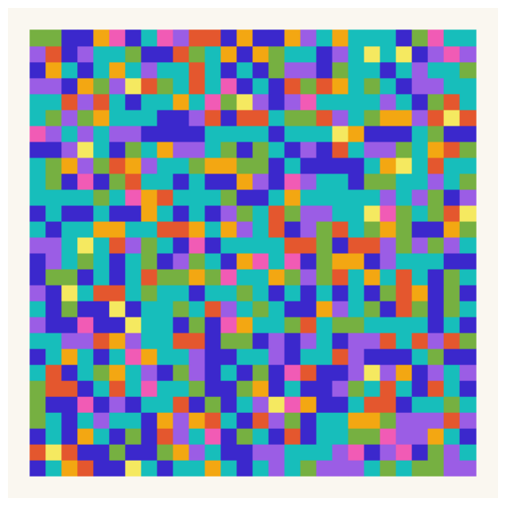
Context: chance as anti-composition, and its return through the back door#
Around 1916, in wartime Zurich, Hans Arp tore paper into scraps and let them fall onto a sheet; according to the much-repeated account of his friend Hans Richter (1965), he glued them down exactly where they landed: Nach dem Gesetz des Zufalls (“According to the Laws of Chance”, 1916–17). Look closely at the collages and you may doubt the story, as scholars do: they are suspiciously tidy, and Arp seems to have nudged the scraps after the fall (MoMA, collection entry). Chance proposed; Arp disposed. Either way, for the Dadaists chance was a weapon: against academic composition, against good taste, against a rationality that had just produced an industrial war. A few years earlier, Marcel Duchamp had already dropped three meter-long threads onto canvas and enshrined their curves as new “standard meters” (3 stoppages étalon, 1913–14): measurement itself handed over to accident (Molderings 2010).
The second wave was cooler and more systematic. John Cage composed Music of Changes (1951) by tossing coins and consulting the I Ching (Cage 1961): chance not as rebellion but as a discipline for evading one’s own preferences. That same year his friend Ellsworth Kelly, in Paris, arranged colored squares by chance procedures of his own devising: the collage series Spectrum Colors Arranged by Chance (1951, a related painting followed in 1951–53), grids whose serene, even glow looks anything but accidental (MoMA, collection entry; SFMOMA, collection entry). And from 1966 on, Gerhard Richter built his color charts from industrial paint-sample cards; the late culmination, 4900 Farben (2007), is a machine-fair grid of 4900 lacquered squares whose arrangement was decided by a random number generator (Gerhard Richter, 4900 Colours microsite).
Here is the paradox to hold on to today: Arp used chance to destroy composition, yet Kelly’s and Richter’s chance-works are unmistakably composed. Where did the composing go? Into the constraints: Kelly chose the eighteen colors before chance touched anything; Richter fixed the palette, the grid, the format. Chance only ever filled in a form that taste had already built. When we replace uniform randomness with a weighted distribution, or jitter positions by a carefully tuned amount, we are doing exactly what they did: composing with the dials of probability. The artist does not disappear; the artist moves one level up.
That is why this session pairs the art history with a bit of probability theory. Distributions, weights, and clipping are not technical chores; they are, quite literally, the compositional tools of chance art.
Two kinds of randomness#
Not all randomness looks alike. A uniform distribution (Gleichverteilung) makes every value in a range equally likely: pure, flat chance. A normal (Gaussian) distribution (Normalverteilung) clusters values around a mean and makes extremes rare: chance with a preference. Its two dials are the mean and a spread (its standard deviation, Streuung): roughly the typical distance from that mean, so rng.normal(0.5, 0.15, ...) below draws around 0.5 with spread 0.15. The histogram below (a histogram chops the range into small bins and raises one bar per bin, counting how many samples landed inside) shows 10,000 samples of each; the difference in shape is the difference between “anything goes” and “mostly this, sometimes that”, and you will see it in the artworks later.
From this chapter on we also switch from the random module to numpy, the array library that powers the rest of the course. An array is, for now, simply a list that does arithmetic on all its elements at once; chapter 6 will lean on that idea hard.
# 10,000 uniform vs 10,000 normal samples, compared as histograms
import numpy as np
rng = np.random.default_rng(42)
uniform_samples = rng.random(10_000) # 10_000 is 10000; the _ only groups digits
normal_samples = rng.normal(0.5, 0.15, size=10_000)
fig, axes = plt.subplots(1, 2, figsize=(10, 3), sharey=True)
axes[0].hist(uniform_samples, bins=50, color="#1B4B9B")
axes[0].set_title("uniform: every value equally likely")
axes[1].hist(normal_samples, bins=50, color="#D02433")
axes[1].set_title("normal: values cluster around the mean")
plt.show()
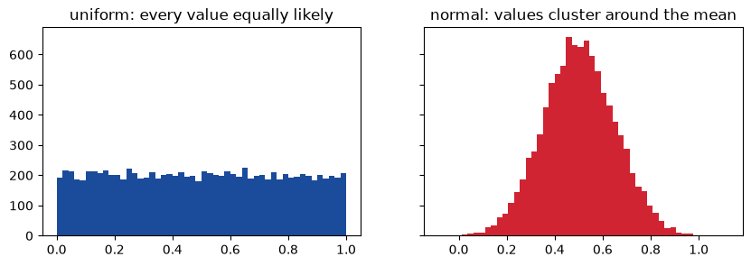
Seeds: repeatable chance#
The rng object above is a random number generator, created with a seed (42). Chapter 1 already whispered that a computer’s randomness is pseudo-random, a deterministic formula in disguise; the seed is that formula’s starting point. Same seed, same sequence, every time and on every machine (strictly: for a given version of numpy).
For generative artists this is a superpower, and it solves a real problem Cage had: he spent the better part of a year tossing coins for Music of Changes (Cage 1961), and no one can ever re-toss them. With a seed, a “chance” artwork becomes exactly reproducible: you can regenerate it at poster size, publish it as seed=7, or browse thousands of variants and keep the address of the one you love.
Course convention from now on: every notebook creates its randomness via rng = np.random.default_rng(seed), and every generator function takes a seed parameter. All our seeds are fixed so the notebooks reproduce exactly; change any seed, any time, to make a piece your own. This is the one and only time we explain this; it holds for the rest of the book.
Try it: in the cell below, give rng_c your birth year as a seed and run the cell twice: different from a and b, but perfectly identical to itself.
# same seed -> same numbers; different seed -> different numbers
rng_a = np.random.default_rng(seed=7)
rng_b = np.random.default_rng(seed=7)
rng_c = np.random.default_rng(seed=8)
print("a:", rng_a.random(3))
print("b:", rng_b.random(3))
print("c:", rng_c.random(3))
a: [0.62509547 0.8972138 0.77568569]
b: [0.62509547 0.8972138 0.77568569]
c: [0.32697228 0.98727684 0.31871084]
Weighted choice#
Kelly drew his colors by lot, but nothing forces the lots to be fair. rng.choice accepts a probability per option (p=...); the probabilities must add up to 1. This single idea is the difference between a color chart where every hue shouts equally and one with a quiet dominant tone and rare accents.
# weighted choice: blue common, yellow occasional, red rare
options = np.array(["blue", "yellow", "red"])
probabilities = [0.6, 0.3, 0.1]
rng = np.random.default_rng(1)
picks = rng.choice(options, size=1000, p=probabilities)
counts = []
for option in options:
counts.append(np.sum(picks == option)) # compares all 1000 at once; True counts as 1
plt.figure(figsize=(4, 3))
plt.bar(options, counts, color=["#1B4B9B", "#F7C523", "#D02433"])
plt.title("1000 weighted picks")
plt.show()
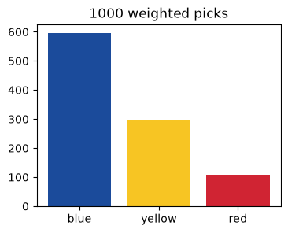
Keeping values on the canvas#
Gaussian randomness has long tails: a jittered position can land outside the canvas, a jittered color value outside the legal range 0–1. np.clip fences values into a range, a small tool you will use constantly.
# clip: values below 0 become 0, values above 1 become 1
rng = np.random.default_rng(3)
values = rng.normal(0.5, 0.4, size=8)
print("raw: ", np.round(values, 2))
print("clipped:", np.round(np.clip(values, 0, 1), 2))
raw: [ 1.32 -0.52 0.67 0.27 0.32 0.41 -0.31 0.41]
clipped: [1. 0. 0.67 0.27 0.32 0.41 0. 0.41]
Build-up: from garish to composed#
We now build the color grid in five stages, adding one compositional decision at a time. Stage one: no decisions at all; every cell gets a completely random RGB color. An image, for numpy, is just an array of shape (rows, cols, 3): three numbers (red, green, blue) per cell.
# stage 1: every cell a completely random RGB color
rng = np.random.default_rng(2026)
grid = rng.random((12, 12, 3))
plt.figure(figsize=(5, 5))
plt.imshow(grid)
plt.axis("off")
plt.show()
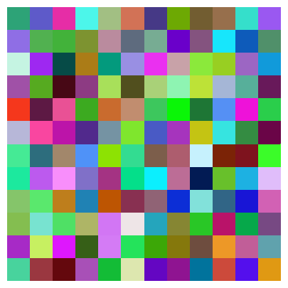
Garish, isn’t it? Sixteen million colors, all equally likely, produce mud with sparks, what photographers call “clown vomit”. No museum wall shows this. The first artistic decision is curation: restrict chance to a palette somebody chose. Our numpy grid stores three numbers per cell, while the course palettes store colors as hex text like "#D02433", so we need one small converter. (Matplotlib itself happily accepts hex strings, as stage 4 will quietly show; the converter is for the array.)
# convert a hex color like '#D02433' into three numbers between 0 and 1
# hex_color[1:3] slices two characters; int(..., 16) reads them as base-16
def hex_to_rgb(hex_color):
r = int(hex_color[1:3], 16) / 255
g = int(hex_color[3:5], 16) / 255
b = int(hex_color[5:7], 16) / 255
return (r, g, b)
print(hex_to_rgb("#D02433"))
(0.8156862745098039, 0.1411764705882353, 0.2)
# stage 2: the same grid, but every cell picks from a fixed palette
import sys
sys.path.append("..")
from agap.helpers import PALETTES, PAPER, save_artwork
palette = PALETTES["bauhaus"]
rng = np.random.default_rng(2026)
grid = np.zeros((12, 12, 3))
for row in range(12):
for col in range(12):
index = rng.integers(0, len(palette)) # top bound excluded, like range
grid[row, col] = hex_to_rgb(palette[index])
plt.figure(figsize=(5, 5))
plt.imshow(grid)
plt.axis("off")
plt.show()
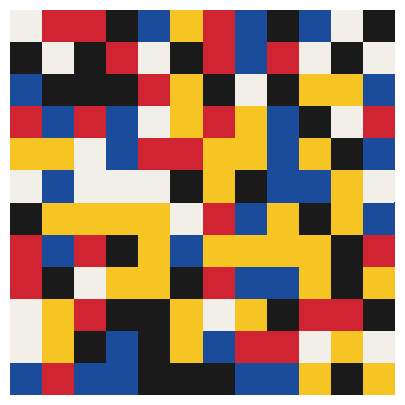
Same code, same chance, same seed; only the menu changed, and suddenly it holds together. Remember the paradox from the context section: the composing moved into the constraints. Notice also that this is authorship: two students with different palettes get recognizably different works from identical algorithms.
Stage 3: not all colors deserve equal airtime. We give each palette color a weight: lots of near-black, a little cream, yellow as a rare event.
Try it: after running the cell, edit the weights (keep them summing to 1) and run it again; you are mixing the mood of the piece.
# stage 3: weighted palette -- a dominant tone and rare accents
weights = [0.15, 0.20, 0.05, 0.45, 0.15] # one weight per bauhaus color
rng = np.random.default_rng(2026)
grid = np.zeros((12, 12, 3))
for row in range(12):
for col in range(12):
index = rng.choice(len(palette), p=weights)
grid[row, col] = hex_to_rgb(palette[index])
plt.figure(figsize=(5, 5))
plt.imshow(grid)
plt.axis("off")
plt.show()
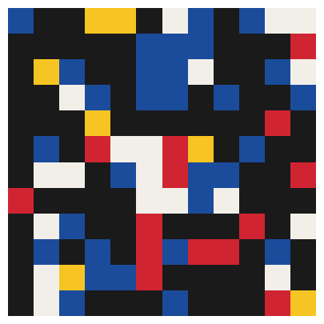
Stage 4: so far the colors are random but the geometry is rigid. Now we jitter positions and sizes with small Gaussian nudges (rng.normal(0, jitter)), so the grid trembles like something laid out by hand. For that we leave imshow and draw each cell as a Rectangle; remember drawing shapes one by one from the last chapter’s squares.
# stage 4: a hand-trembled grid -- positions and sizes jittered
from matplotlib.patches import Rectangle
rng = np.random.default_rng(11)
jitter = 0.12
fig, ax = plt.subplots(figsize=(6, 6), facecolor=PAPER)
for row in range(14):
for col in range(14):
x = col + rng.normal(0, jitter)
y = row + rng.normal(0, jitter)
size = 0.9 + rng.normal(0, jitter)
index = rng.integers(0, len(palette))
ax.add_patch(Rectangle((x, y), size, size, color=palette[index]))
ax.set_xlim(-1, 15)
ax.set_ylim(-1, 15)
ax.set_aspect("equal")
ax.axis("off")
plt.show()
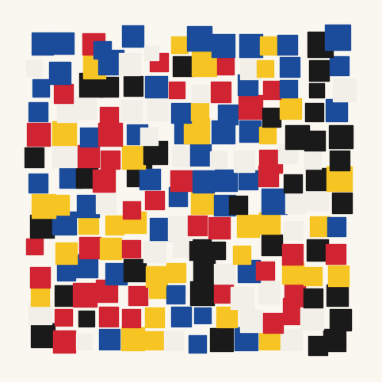
Stage 5: chance can also ride on top of a gradient. In Kelly’s related Spectrum paintings, the ordered cousins of the chance collages, hue drifts systematically across the surface (SFMOMA, Spectrum I); here we let chance roughen that order. We build colors in HSV (hue–saturation–value), let the hue follow the column index, and add Gaussian noise to it. Hue lives on a color wheel, so instead of clipping we wrap with the modulo operator % 1.0: clip fences a line, modulo closes a circle.
# stage 5: Kelly-style spectrum -- hue drifts left to right, chance roughens it
import colorsys
rng = np.random.default_rng(3)
rows = 8
cols = 40
grid = np.zeros((rows, cols, 3))
for row in range(rows):
for col in range(cols):
hue = col / cols + rng.normal(0, 0.03)
hue = hue % 1.0 # hues wrap around the color wheel
r, g, b = colorsys.hsv_to_rgb(hue, 0.85, 0.95)
grid[row, col] = (r, g, b)
plt.figure(figsize=(10, 2))
plt.imshow(grid)
plt.axis("off")
plt.show()
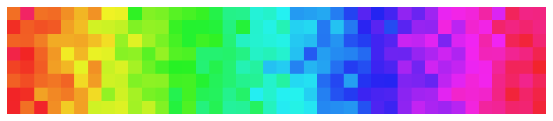
Playground#
The finished generator, all decisions as parameters: grid size, palette, weights (or None for fair chance), jitter, seed. Below it is called four times with very different temperaments, plus a slider version if your environment supports it.
# the finished generator: a chance color grid in the Richter/Kelly tradition
def color_grid(rows=20, cols=20, palette_name="bauhaus", weights=None,
jitter=0.0, cell_size=0.92, seed=1):
palette = PALETTES[palette_name]
rng = np.random.default_rng(seed)
fig, ax = plt.subplots(figsize=(10, 10 * rows / cols), facecolor=PAPER)
for row in range(rows):
for col in range(cols):
x = col + rng.normal(0, jitter)
y = row + rng.normal(0, jitter)
size = cell_size + rng.normal(0, jitter)
if weights is None:
index = rng.integers(0, len(palette))
else:
index = rng.choice(len(palette), p=weights)
ax.add_patch(Rectangle((x, y), size, size, color=palette[index]))
ax.set_xlim(-1, cols + 1)
ax.set_ylim(-1, rows + 1)
ax.set_aspect("equal")
ax.axis("off")
plt.show()
return fig
# temperament 1 and 2: strict Richter grid vs trembling pastel
art_1 = color_grid(rows=30, cols=30, palette_name="kelly", seed=8)
art_2 = color_grid(rows=18, cols=18, palette_name="pastel", jitter=0.15, seed=2)
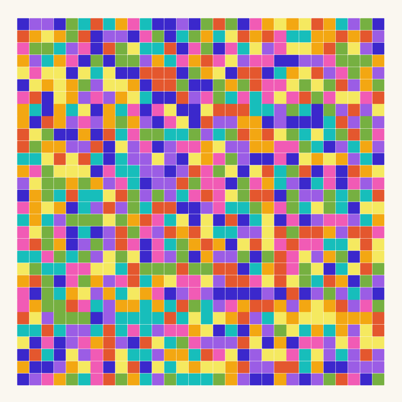
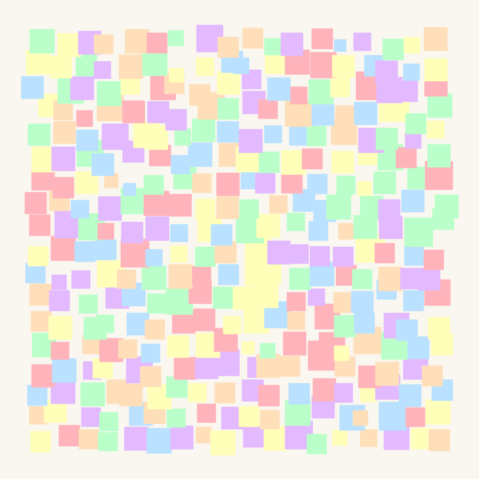
# temperament 3 and 4: dark and weighted vs a quiet monochrome frieze
art_3 = color_grid(rows=25, cols=25, palette_name="rothko_dark",
weights=[0.30, 0.25, 0.15, 0.05, 0.25], jitter=0.04, seed=5)
art_4 = color_grid(rows=6, cols=36, palette_name="monochrome",
weights=[0.05, 0.10, 0.15, 0.25, 0.25, 0.20], seed=13)
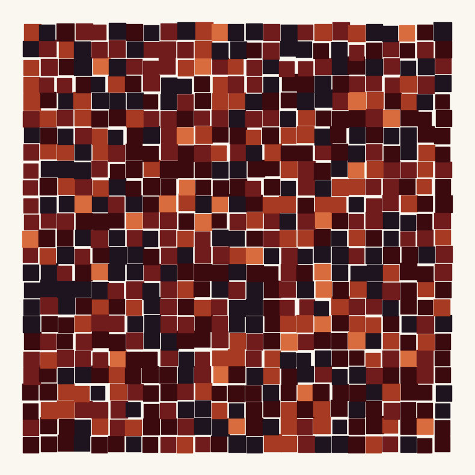
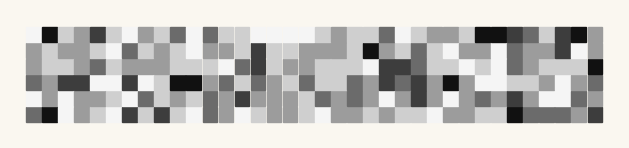
Look and compare. Which of the four feels calmest? Which parameter is responsible: the palette, the weights, or the jitter? Note that art_3 uses both weights and jitter: cover one eye and ask yourself which of the two carries more of its mood. And why does the wide format of art_4 alone change how you read it?
# optional sliders -- everything they do, the plain function calls above do too
try:
from ipywidgets import interact, fixed
interact(color_grid, rows=(4, 40), cols=(4, 40),
palette_name=list(PALETTES.keys()), weights=fixed(None),
jitter=(0.0, 0.4, 0.02), seed=(0, 100))
except ImportError:
print("ipywidgets is not installed -- use the plain function calls above")
Export your artwork#
Tune the parameters until the grid feels like yours, replace yourname, run the cell; the print-quality PNG lands in assets/outputs/.
# save YOUR artwork: adjust parameters, replace 'yourname', run the cell
my_artwork = color_grid(rows=25, cols=25, palette_name="bauhaus",
weights=[0.15, 0.20, 0.05, 0.45, 0.15],
jitter=0.05, seed=2026)
saved_path = save_artwork(my_artwork, "yourname", chapter=2)
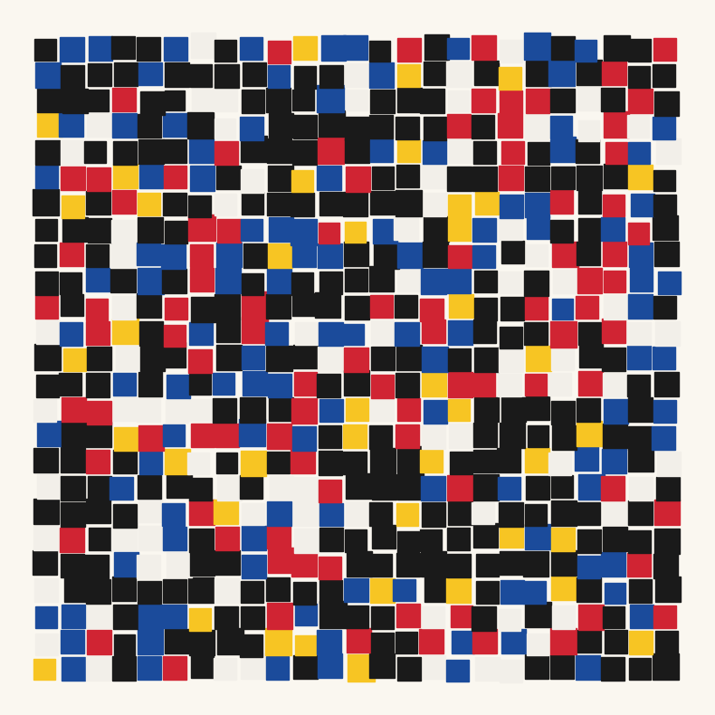
saved: assets/outputs/ch02_yourname.png
Exercises#
(a) Parameter exploration: the threshold of design. Run color_grid with jitter at 0.0, 0.05, 0.1, 0.2, 0.3 and 0.4 (same seed each time). Somewhere in that range the grid stops feeling “designed” and starts feeling broken. Where is that threshold for you? Compare with your neighbor: is it the same value? What does that say about where the artwork happens: in the code or in the eye?
(b) Code modification: Richter’s rule. Pure chance produces clumps of same-colored neighbors, and viewers read clumps as intent; look for the clumps in 4900 Farben, where Richter deliberately let them stand. Suppose you feel differently about your own grid. Implement the constraint: no two horizontally adjacent cells may share a color. Start from the stage-2 grid code (the imshow version is easier than the Rectangle version): remember the previous cell’s color index, and re-draw while the new index equals it.
Solution
def color_grid_no_repeat(rows=20, cols=20, palette_name="bauhaus", seed=1):
palette = PALETTES[palette_name]
rng = np.random.default_rng(seed)
grid = np.zeros((rows, cols, 3))
for row in range(rows):
previous_index = -1 # no color yet in this row
for col in range(cols):
index = rng.integers(0, len(palette))
while index == previous_index: # forbidden? draw again
index = rng.integers(0, len(palette))
grid[row, col] = hex_to_rgb(palette[index])
previous_index = index
plt.figure(figsize=(6, 6))
plt.imshow(grid)
plt.axis("off")
plt.show()
color_grid_no_repeat()
The while loop simply re-rolls the dice until the constraint is satisfied, the standard trick for “chance, but not that”. Compare the constrained grid with the free one: most viewers call the constrained one more random, which is this chapter’s paradox in a single image.
(c) Creative challenge: your own chance operation. Squares are only one vocabulary. Compose a chance work from a different element: dots of random size, short lines at random angles, or letters drawn from your own name. Keep the two Kelly/Richter decisions (a curated palette and a deliberate weighting) and give the piece a title in the Dada spirit.
Further reading#
Herbert Molderings, Duchamp and the Aesthetics of Chance (Columbia UP, 2010): chapter 1 on the 3 Standard Stoppages as an “experiment in chance”.
Gerhard Richter, 4900 Colours: the artist’s own microsite; look at the versioning system (the work can be hung in 11 different configurations).
Ellsworth Kelly on the Paris chance works: Spectrum Colors Arranged by Chance, MoMA: collection entry with the artist’s account of the lottery procedure.
Technical: the numpy random generator documentation: skim
random,normal,choice,integers; these four methods carry the whole course.
References#
Cage, J. (1961). To Describe the Process of Composition Used in Music of Changes and Imaginary Landscape No. 4. In Silence: Lectures and Writings, pp. 57–59. Wesleyan University Press. Cage’s own account of the coin-tossing procedure.
Gerhard Richter, official website. 4900 Colours, microsite. gerhard-richter.com/en/art/microsites/4900-colours. Documents the randomly generated arrangement, the 11 hanging configurations, and the colour charts begun in 1966.
Molderings, H. (2010). Duchamp and the Aesthetics of Chance: Art as Experiment (trans. J. Brogden). Columbia University Press.
Museum of Modern Art. Jean (Hans) Arp, Untitled (Collage with Squares Arranged according to the Law of Chance), 1916–17, collection entry. moma.org/collection/works/37013. Quotes Hans Richter’s account and notes that the collages’ “relatively ordered appearance” suggests Arp did not fully relinquish control.
Museum of Modern Art. Ellsworth Kelly, Spectrum Colors Arranged by Chance II, 1951, collection entry. moma.org/collection/works/37202.
Richter, H. (1965). Dada: Art and Anti-Art. Thames and Hudson. (German original: Dada. Kunst und Antikunst, DuMont Schauberg, 1964.) The source of the dropped-paper story.
San Francisco Museum of Modern Art. Ellsworth Kelly, Spectrum Colors Arranged by Chance, 1951–1953, collection entry. sfmoma.org/artwork/99.352. The painting that followed the 1951 collage series.
San Francisco Museum of Modern Art. Ellsworth Kelly, Spectrum I, 1953, collection entry. sfmoma.org/artwork/99.353. The ordered spectral-hue cousin of the chance works.
Appendix: regenerate the showpiece#
This last cell (re)creates the image shown at the top of the notebook. It runs automatically with Restart & Run All.
# regenerate this chapter's showpiece: a large weighted Richter-style grid
showpiece = color_grid(rows=28, cols=28, palette_name="kelly",
weights=[0.08, 0.06, 0.03, 0.14, 0.30, 0.22, 0.12, 0.05],
cell_size=1.0, jitter=0.0, seed=4900)
saved_path = save_artwork(showpiece, "showpiece", chapter=2)
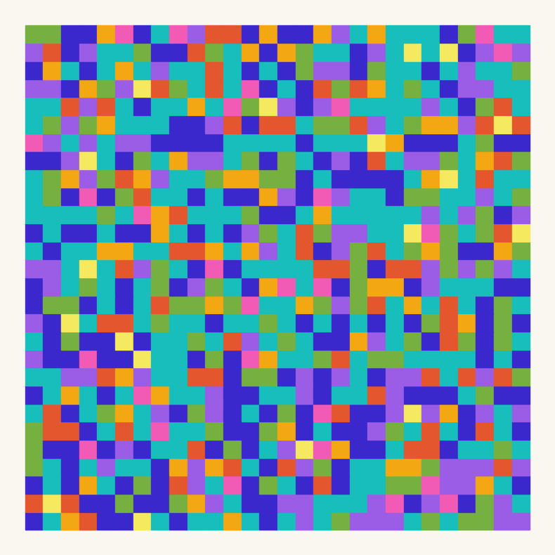
saved: assets/outputs/ch02_showpiece.png